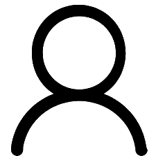

{% extends 'base_logged.html' %}
{% import "bootstrap/wtf.html" as wtf %}
{% block head%}
<link rel="stylesheet" href="https://stackpath.bootstrapcdn.com/bootstrap/4.3.1/css/bootstrap.min.css" integrity="sha384-ggOyR0iXCbMQv3Xipma34MD+dH/1fQ784/j6cY/iJTQUOhcWr7x9JvoRxT2MZw1T" crossorigin="anonymous">

<link rel="stylesheet" href="https://cdnjs.cloudflare.com/ajax/libs/animate.css/3.7.0/animate.min.css">

<link rel="stylesheet" type="text/css" href="{{ url_for('static', filename='css/base2.css') }}">
<title>Search / SecretDiaries</title>
{% endblock %}
{% block content%}
<a href="/account/{{current_user.username}}"></a>
<a href="/account/{{ username }}" style="margin-top: 50vh;"class="accounts"></a>
{% endblock %}
{% block body %}
{% block topnav %}
<div class="head">
    <h5>{{ username }}</h3>
<div class="content"></div>
    
</div>
</div>
{% endblock %}
<form method="GET" class="search">
    {{ form.hidden_tag() }}
            {{ wtf.form_field(form.search) }}
            {{ wtf.form_field(form.submit) }}
</form>

<div id="scroller" class="">
          
    <!-- template schema, hidden from the dom -->
    <template class = "user" id="post_template">

      

    </template>

  </div>

  <!-- element to trigger the IntersectionObserver -->
  <div class="" id="sentinel" style="margin-top: 100px;margin-bottom: 50px;">
    <div class="spinner-border" role="status"></div>
  </div>
<script>
    var pathArray = window.location.pathname.split('/');
    var scroller = document.querySelector("#scroller");
    var template = document.querySelector('#post_template');
    var sentinel = document.querySelector('#sentinel');
    
    // Set a counter to count the items loaded
    var counter = 0;
    
    // Function to request new items and render to the dom
    function loadItems() {
    
      // Use fetch to request data and pass the counter value in the QS
      fetch(`/followLoad?c=${counter}`).then((response) => {
        // Convert the response data to JSON
        response.json().then((data) => {
          // If empty JSON, exit the function
          if (!data.length) {
    
            // Replace the spinner with "No more posts"
            sentinel.innerHTML = "No more posts";
            
            return;
          }
          // Iterate over the items in the response
          for (var i = 0; i < data.length; i++) {
            if(data[i].isSame){
                continue;
              }
              var div = document.createElement("div");
              var img = document.createElement('div');
              var img_anc = document.createElement('a');
              var img_tag = document.createElement('img');
              var username = document.createElement('p');
              var link = document.createElement('p');
              scroller.appendChild(div)
              let template_clone = template.content.cloneNode(true);
              div.appendChild(img);
              div.classList.add("list");
              img.appendChild(img_anc);
              img.appendChild(username);
              img.appendChild(link);
              img_anc.appendChild(img_tag);
              img_anc.appendChild(username);
              username.append(`${data[i].username}`);
              username.setAttribute("id","username")
              img_tag.setAttribute("src",`${data[i].image_file}`);
              img_anc.setAttribute("href",`/account/${data[i].username}`);
              username.classList.add("username");
              img_anc.classList.add("usernames");
              link.setAttribute("user_id",`${data[i].id}`);
              img.classList.add("acc-img");
              img_tag.classList.add("account-img");
              link.setAttribute("onclick",`followUser(this)`);
              // Clone the HTML template
              
              if(data[i].following){
                link.setAttribute("id","unfollow");
                link.classList.add("unfollow");
                link.innerHTML = "Unfollow"
              }else{
                link.setAttribute("id","follow");
                link.classList.add("follow");
                link.innerHTML = "Follow"
              }
    
    
            // Append template to dom
            scroller.appendChild(template_clone);
            // Increment the counter
            counter += 1;
    
            // Update the counter in the navbar
            
          }
        
    })
    
      })
    }
    
    
    // Create a new IntersectionObserver instance
    var intersectionObserver = new IntersectionObserver(entries => {
    
      // Uncomment below to see the entry.intersectionRatio when
      // the sentinel comes into view
    
      // entries.forEach(entry => {
      //   console.log(entry.intersectionRatio);
      // })
    
      // If intersectionRatio is 0, the sentinel is out of view
      // and we don't need to do anything. Exit the function
      if (entries[0].intersectionRatio <= 0) {
        return;
      }
    
      // Call the loadItems function
      loadItems();
    
      
    });
    
    
    // Instruct the IntersectionObserver to watch the sentinel
    intersectionObserver.observe(sentinel);
    
    
    </script>
{% endblock %}